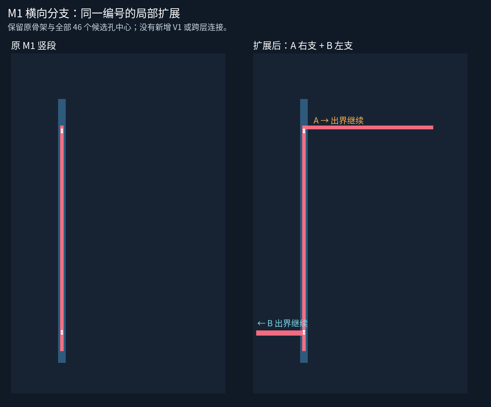
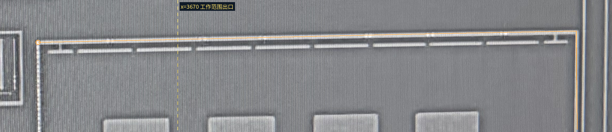
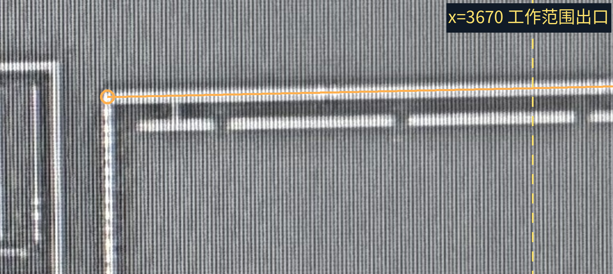
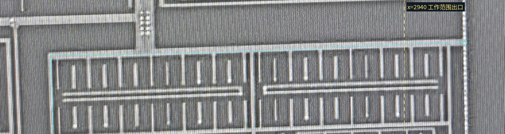
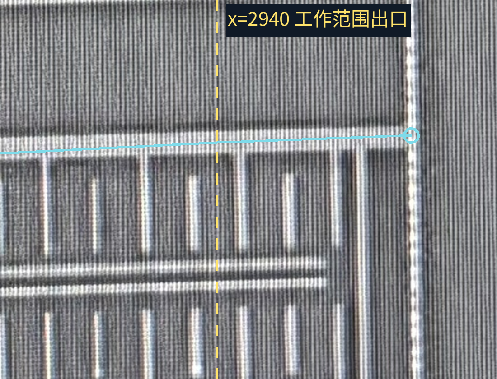

两条主干在当前范围内未见明显断口，沿用同一金属编号 C-M1-SPINE；原有 A/B → V1 → R01 的裁决直接接续。没有新增孔或跨层连接。

彩线只在 M1 原生坐标内描记；黄色虚线为工作范围出口，不代表金属终点。原图可点击放大。


彩线只在 M1 原生坐标内描记；黄色虚线为工作范围出口，不代表金属终点。原图可点击放大。


沿 B 左支逐项列出可见的向下 M1 短指，先区分与上横条相连、与下方平行条相连或无法判断，再补几何；新的 V1 身份需从 M1 来源查证，不重问 A/B。
本页 PNG 已目视检查，资源与脚本做静态检查；浏览器交互未实测。